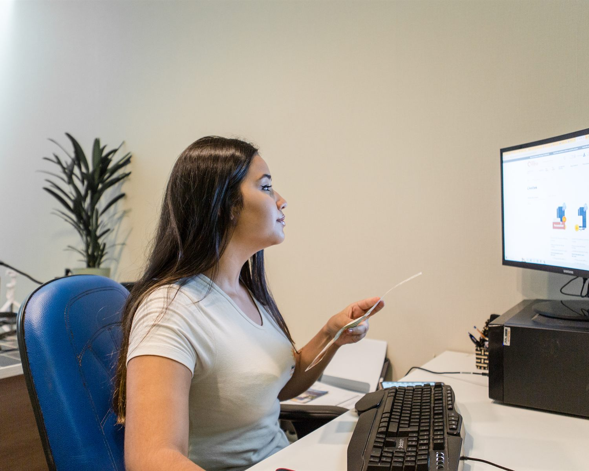
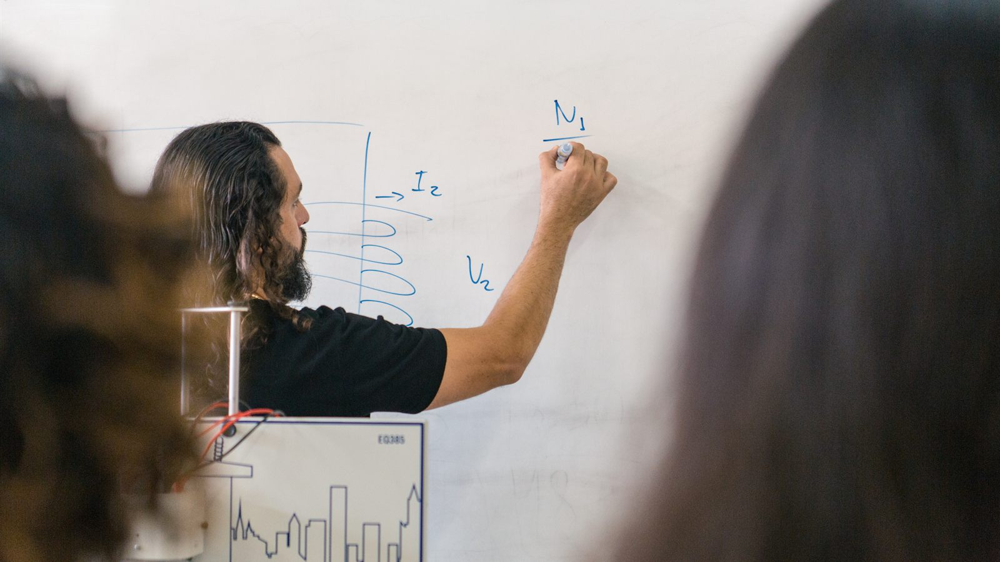
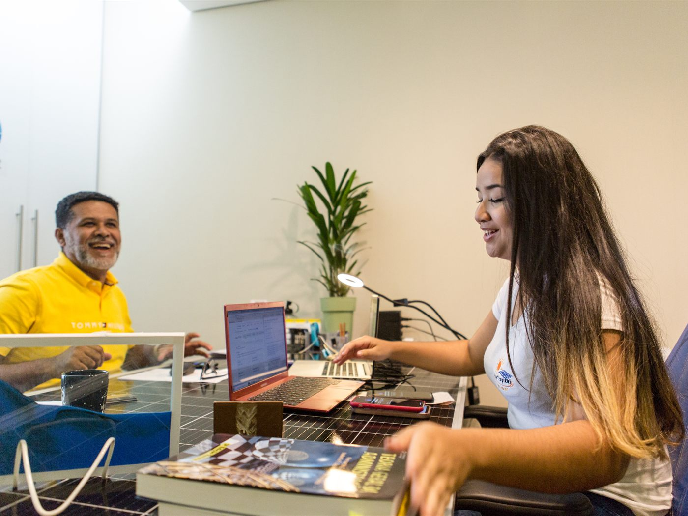
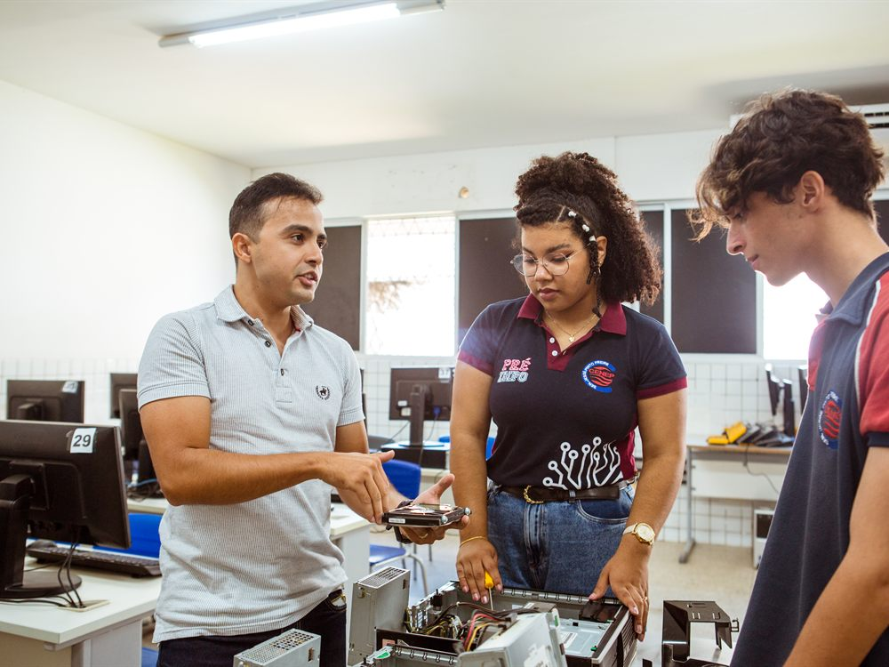
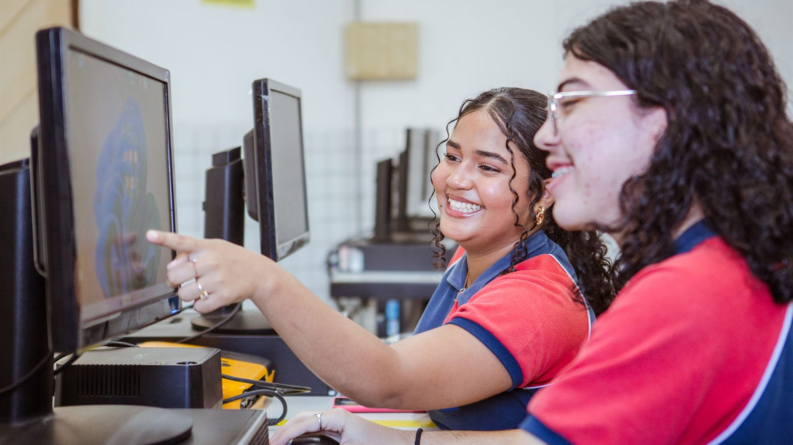
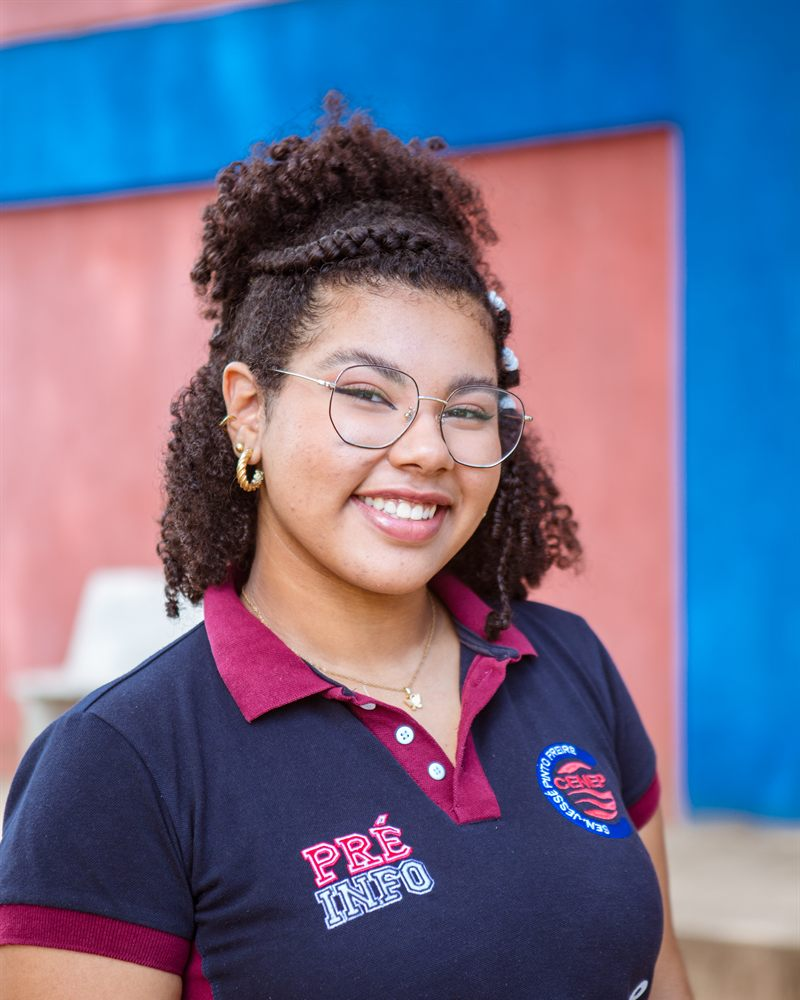
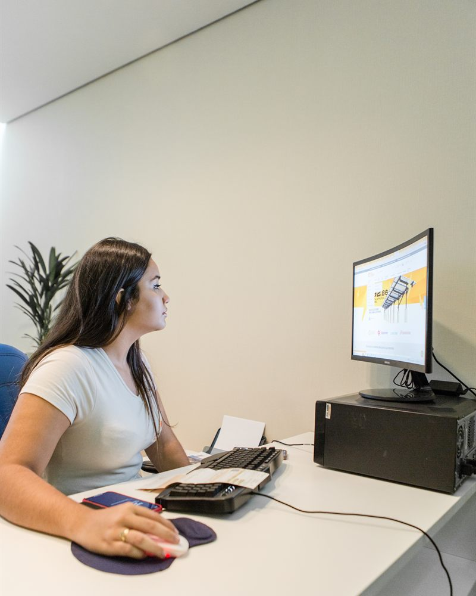
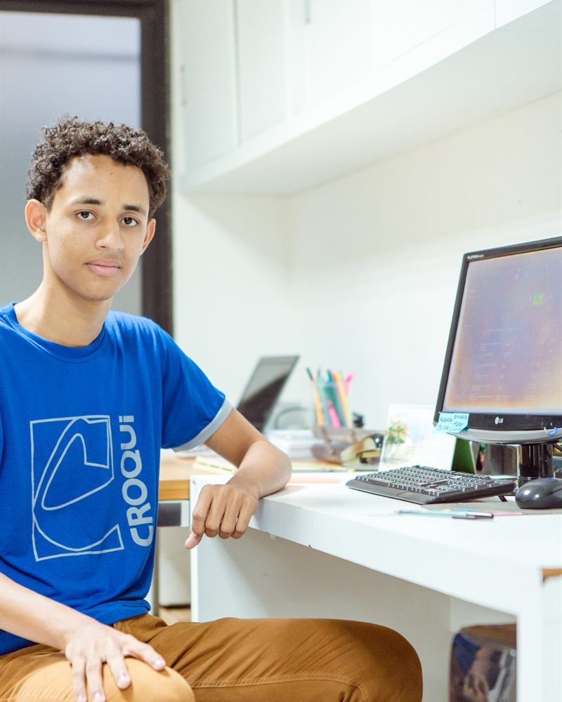

Estágio obrigatório
Faz parte da carga horária do curso, quando o Projeto Pedagógico de Curso prevê. É requisito para o diploma.
Na Educação Profissional da rede estadual, a sala de aula continua na empresa. Aqui estão os números do estágio, como funcionam o estágio e a aprendizagem, histórias de quem já está no mundo do trabalho e o caminho para empresas que querem receber estudantes.

2026: pesquisa de visitas técnicas da SUEP, com 142 unidades visitadas e respostas até 09/10. Das 142, 53 foram registradas como ainda não aptas a ter estagiários. 2025: revista “Rede Estadual de EPT: História, Saberes e Transformação”.
A prática profissional acompanha o estudante do começo ao fim do curso. O Núcleo do Mundo do Trabalho da SUEP coordena esse acompanhamento em quatro polos regionais.
Em todas as formas de oferta, o projeto integrador é o espaço onde a formação geral e a formação técnica se encontram. Os estudantes investigam problemas do seu território, juntam teoria e prática e propõem soluções.
Na EJATEC, o Projeto Integrador Final parte das trajetórias de vida e de trabalho dos estudantes jovens e adultos.
Ver um exemplo na EE Walfredo Gurgel
No estágio supervisionado, o estudante aplica o que aprende em empresas e instituições, com um supervisor no local e um professor orientador na escola. Agentes de integração como Nube, CIEE e IEL ajudam a aproximar escolas e empresas.
Em 2025, eram 653 estagiários, em 35 instituições e 28 municípios.
Como funciona o estágio
Na aprendizagem profissional, o estudante é contratado como jovem aprendiz, com carteira assinada, e divide o tempo entre a escola e a empresa. Desde o segundo semestre de 2024, o Programa Aprendiz Potiguar leva esses contratos às escolas da rede.
Conhecer o Aprendiz Potiguar
O estágio leva a experiência prática para todas as regiões do estado e valoriza as vocações produtivas de cada lugar. Escolha o ano e passe o mouse ou toque no mapa para ver os municípios.
28 municípios com estagiários em 2025
Municípios com estagiários da rede ao longo de 2025, segundo a revista da EPT.
O estágio segue a Lei do Estágio (Lei nº 11.788/2008). Os pontos principais para estudantes da Educação Profissional de nível médio:
Estudante, escola e empresa assinam um termo com as atividades, o horário e a duração do estágio.
Um supervisor da empresa acompanha o dia a dia, e um professor orientador da escola acompanha o aprendizado.
A jornada é de no máximo 6 horas diárias e 30 semanais, compatível com as aulas.
O estagiário tem seguro contra acidentes pessoais. No estágio não obrigatório, recebe bolsa e auxílio-transporte.
Faz parte da carga horária do curso, quando o Projeto Pedagógico de Curso prevê. É requisito para o diploma.
É uma atividade a mais, escolhida pelo estudante. Conta como experiência e dá direito a bolsa e auxílio-transporte.
As regras de estágio de cada curso estão no Projeto Pedagógico de Curso e no Documento orientador de práticas profissionais.
Primeiro centro de educação profissional do estado, criado em 2002 em Natal, o CENEP Senador Jessé Pinto Freire construiu sua identidade em torno da prática profissional. A coordenação de estágio apresenta o centro às empresas, prepara os estudantes desde o primeiro dia e acompanha cada contratação.
“Desde o primeiro dia de aula, eles entendem que são representantes da escola na comunidade. E isso tem peso no setor produtivo.”Fátima Coelho, coordenadora de estágio do CENEP desde 2012


Desde o segundo semestre de 2024, o programa leva a aprendizagem profissional às escolas, com contratos de trabalho regidos pela CLT: experiência real, com direitos garantidos. Para ampliar o programa, a SUEP articula empresas, o Ministério do Trabalho e Emprego, agentes de integração e outros setores do governo estadual.
As regras do programa estão na Cartilha de implementação da aprendizagem profissional.
“Comecei a estagiar com 17 anos e entendi como o mundo funciona. Isso ensina a valorizar o trabalho e o esforço de muita gente: a gente percebe que faz uma parte dentro de um sistema, mas que essa parte é o que faz o todo dar certo.”Lorrayne Tarquino dos Santos, egressa do CENEP e estudante de Jornalismo na UFRN


Fotos de agosto de 2023, feitas pela SUEP. Depoimento da revista “Rede Estadual de EPT: História, Saberes e Transformação”. Mais histórias em Boas práticas.
Não. Quando segue a Lei do Estágio, o estágio é um ato educativo e não cria vínculo de emprego. Na aprendizagem profissional, ao contrário, há contrato de trabalho com carteira assinada.
Até 2 anos na mesma empresa, exceto para estagiários com deficiência.
Sim. Em estágios de 1 ano ou mais, o estudante tem direito a 30 dias de recesso, de preferência nas férias escolares. Em estágios mais curtos, o recesso é proporcional.
Converse com a coordenação de estágio ou a gestão da sua escola. Os agentes de integração, como Nube, CIEE e IEL, também divulgam vagas. Veja a sua escola em Onde estudar.
Depende do curso. O Projeto Pedagógico de Curso diz se o estágio é obrigatório e qual a carga horária. Os PPCs estão em Documentos.
A rede estadual forma técnicos em 18 cursos, em 80 municípios. Fale com a escola mais próxima ou com a SUEP, que articula escolas, empresas e agentes de integração.